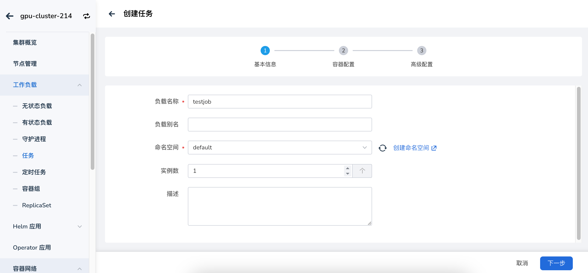
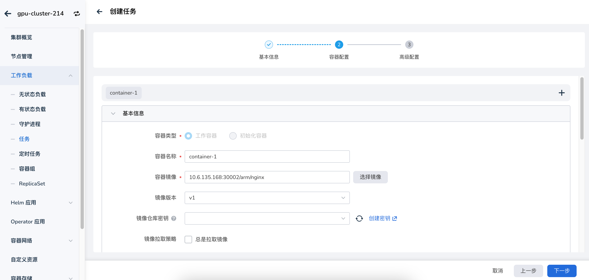
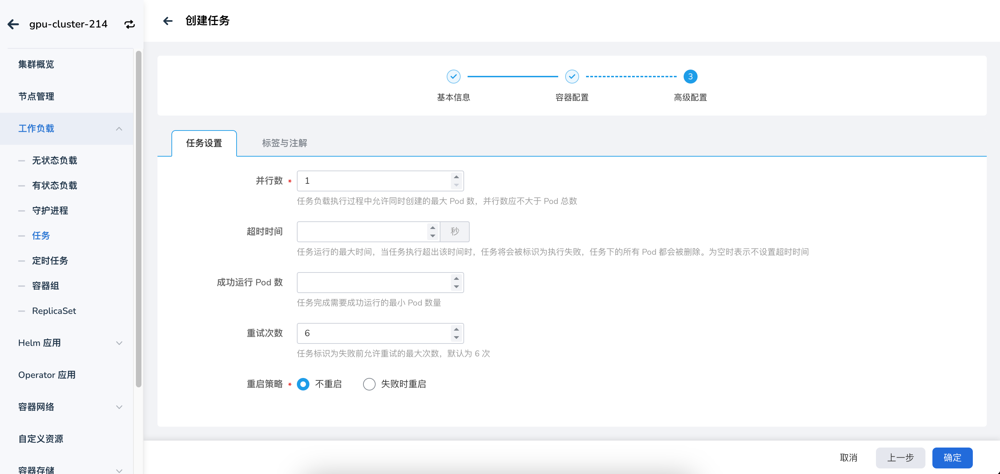
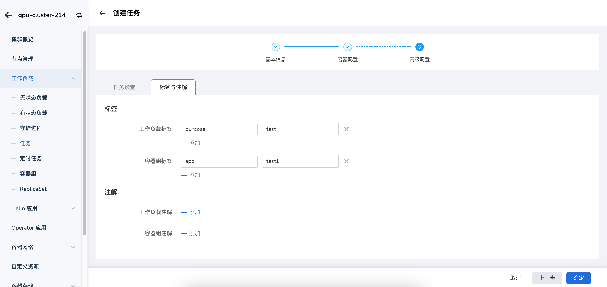

创建任务（Job）¶
本文介绍如何通过镜像和 YAML 文件两种方式创建任务（Job）。
任务（Job）适用于执行一次性任务。Job 会创建一个或多个 Pod，Job 会一直重新尝试执行 Pod，直到成功终止的 Pod 达到一定数量。成功终止的 Pod 达到指定的数量后，Job 也随之结束。删除 Job 时会一同清除该 Job 创建的所有 Pod。暂停 Job 时删除该 Job 中的所有活跃 Pod，直到 Job 被继续执行。有关任务（Job）的更多介绍，可参考Job。
前提条件¶
-
在容器管理模块中接入 Kubernetes 集群或者创建 Kubernetes 集群，且能够访问集群的 UI 界面。
-
单个实例中有多个容器时，请确保容器使用的端口不冲突，否则部署会失效。
镜像创建¶
参考以下步骤，使用镜像创建一个任务。
-
点击左侧导航栏上的 集群列表 ，然后点击目标集群的名称，进入 集群详情 页面。

-
在集群详情页面，点击左侧导航栏的 工作负载 -> 任务 ，然后点击页面右上角的 镜像创建 按钮。

-
依次填写基本信息、容器配置、服务配置、高级配置后，在页面右下角点击 确定 完成创建。
系统将自动返回 任务 列表。点击列表右侧的 ┇ ，可以对任务执行执行更新、删除、重启等操作。

基本信息¶
在 创建任务 页面中，根据下表输入基本信息后，点击 下一步 。

- 负载名称：最多包含 63 个字符，只能包含小写字母、数字及分隔符（“-”），且必须以小写字母或数字开头及结尾。同一命名空间内同一类型工作负载的名称不得重复，而且负载名称在工作负载创建好之后不可更改。
- 命名空间：选择将新建的任务部署在哪个命名空间，默认使用 default 命名空间。找不到所需的命名空间时可以根据页面提示去创建新的命名空间。
- 实例数：输入工作负载的 Pod 实例数量。默认创建 1 个 Pod 实例。
- 描述：输入工作负载的描述信息，内容自定义。字符数量应不超过 512 个。
容器配置¶
容器配置分为基本信息、生命周期、健康检查、环境变量、数据存储、安全设置六部分，点击下方的相应页签可查看各部分的配置要求。
容器配置仅针对单个容器进行配置，如需在一个容器组中添加多个容器，可点击右侧的 + 添加多个容器。
在配置容器相关参数时，必须正确填写容器的名称、镜像参数，否则将无法进入下一步。参考以下要求填写配置后，点击 确认 。

- 容器类型：默认为
工作容器。有关初始化容器，参见 k8s 官方文档。 - 容器名称：最多包含 63 个字符，支持小写字母、数字及分隔符（“-”）。必须以小写字母或数字开头及结尾，例如 nginx-01。
- 镜像：
- 特权容器：容器默认不可以访问宿主机上的任何设备，开启特权容器后，容器即可访问宿主机上的所有设备，享有宿主机上的运行进程的所有权限。
- CPU/内存配额：CPU/内存资源的请求值（需要使用的最小资源）和限制值（允许使用的最大资源）。请根据需要为容器配置资源，避免资源浪费和因容器资源超额导致系统故障。默认值如图所示。
- GPU 配置：为容器配置 GPU 用量， 仅支持输入正整数。
- 整卡模式：
- 物理卡数量：容器能够使用的物理 GPU 卡数量。配置后，容器将占用整张物理 GPU卡。同时物理卡数量需要 ≤ 单节点插入的最大 GPU 卡数。
- 虚拟化模式：
- 物理卡数量：容器能够使用的物理 GPU 卡数量， 物理卡数量需要 ≤ 单节点插入的最大 GPU 卡数。
- GPU 算力：每张物理 GPU 卡上需要使用的算力百分比，最多为100%。
- 显存：每张物理卡上需要使用的显存数量。
- 调度策略（Binpack / Spread）：支持基于 GPU 卡和基于节点的两种维度的调度策略。Binpack 是集中式调度策略，优先将容器调度到同一个节点的同一张 GPU 卡上；Spread 是分散式调度策略，优先将容器调度到不同节点的不同 GPU 卡上，根据实际场景可组合使用。（当工作负载级别的 Binpack / Spread 调度策略与集群级别的 Binpack / Spread 调度策略冲突时，系统优先使用工作负载级别的调度策略）。
- 任务优先级：GPU 算力会优先供给高优先级任务使用，普通任务会减少甚至暂停使用 GPU 算力，直到高优先级任务结束，普通任务会重新继续使用 GPU 算力，常用于在离线混部场景。
- 指定型号：将工作负载调度到指定型号的 GPU 卡上，适用于对 GPU 型号有特殊要求的场景。
- Mig 模式
- 规格：切分后的物理 GPU 卡规格。
- 数量：使用该规格的数量。
- 整卡模式：
Tip
设置 GPU 之前，需要管理员预先在集群上安装 GPU Operator 和 nvidia-vgpu（仅 vGPU 模式需要安装）， 并在集群设置中开启 GPU 特性。
设置容器启动时、启动后、停止前需要执行的命令。 详情可参考容器生命周期配置。

用于判断容器和应用的健康状态，有助于提高应用的可用性。 详情可参考容器健康检查配置。

配置 Pod 内的容器参数，为 Pod 添加环境变量或传递配置等。 详情可参考容器环境变量配置。

配置容器挂载数据卷和数据持久化的设置。 详情可参考容器数据存储配置。

通过 Linux 内置的账号权限隔离机制来对容器进行安全隔离。您可以通过使用不同权限的账号 UID （数字身份标记）来限制容器的权限。例如，输入 0 表示使用 root 账号的权限。

高级配置¶
高级配置包括任务设置、标签与注解两部分。

- 并行数：任务执行过程中允许同时创建的最大 Pod 数，并行数应不大于 Pod 总数。默认为 1。
- 超时时间：超出该时间时，任务会被标识为执行失败，任务下的所有 Pod 都会被删除。为空时表示不设置超时时间。
- 重启策略：设置失败时是否重启 Pod。
可以点击 添加 按钮为工作负载实例 Pod 添加标签和注解。

YAML 创建¶
除了通过镜像方式外，还可以通过 YAML 文件更快速地创建创建任务。
-
点击左侧导航栏上的 集群列表 ，然后点击目标集群的名称，进入 集群详情 页面。
-
在集群详情页面，点击左侧导航栏的 工作负载 -> 任务 ，然后点击页面右上角的 YAML 创建 按钮。

-
输入或粘贴事先准备好的 YAML 文件，点击 确定 即可完成创建。

这里有一个 YAML 示例供参考：
kind: Job
apiVersion: batch/v1
metadata:
name: helm-operation-install-gpu-operator-r9qgklbfzr
generateName: helm-operation-install-gpu-operator-r9qgk
namespace: gpu-operator
uid: b4eeba61-9c6a-4198-a3c3-3a1bb59b637a
resourceVersion: '419300'
generation: 1
creationTimestamp: '2024-12-09T09:10:57Z'
labels:
batch.kubernetes.io/controller-uid: b4eeba61-9c6a-4198-a3c3-3a1bb59b637a
batch.kubernetes.io/job-name: helm-operation-install-gpu-operator-r9qgklbfzr
controller-uid: b4eeba61-9c6a-4198-a3c3-3a1bb59b637a
job-name: helm-operation-install-gpu-operator-r9qgklbfzr
sidecar.istio.io/inject: 'false'
annotations:
batch.kubernetes.io/job-tracking: ''
job.kpanda.io/last-reversion-handle-uid: b4eeba61-9c6a-4198-a3c3-3a1bb59b637a
revisions: >-
{"1":{"status":"running","desire":1,"uid":"b4eeba61-9c6a-4198-a3c3-3a1bb59b637a","start-time":"2024-12-09T09:10:57Z","completion-time":"0001-01-01T00:00:00Z"}}
ownerReferences:
- apiVersion: helm.kpanda.io/v1alpha1
kind: HelmApp
name: gpu-operator
uid: bc2d26b4-651d-444b-bfe2-76a51b364201
spec:
parallelism: 1
completions: 1
activeDeadlineSeconds: 1800
backoffLimit: 3
selector:
matchLabels:
batch.kubernetes.io/controller-uid: b4eeba61-9c6a-4198-a3c3-3a1bb59b637a
template:
metadata:
generateName: helm-operation-
namespace: gpu-operator
creationTimestamp: null
labels:
batch.kubernetes.io/controller-uid: b4eeba61-9c6a-4198-a3c3-3a1bb59b637a
batch.kubernetes.io/job-name: helm-operation-install-gpu-operator-r9qgklbfzr
controller-uid: b4eeba61-9c6a-4198-a3c3-3a1bb59b637a
job-name: helm-operation-install-gpu-operator-r9qgklbfzr
sidecar.istio.io/inject: 'false'
spec:
volumes:
- name: kubeconfig
secret:
secretName: helm-operation-kubeconfig-h8td2
defaultMode: 420
- name: data
secret:
secretName: helm-operation-8t4pc
defaultMode: 420
containers:
- name: helm
image: release.daocloud.io/kpanda/kpanda-shell:v0.0.11
command:
- helm-cmd
workingDir: /home/shell/helm
env:
- name: KUBECONFIG
value: /home/.kube/config
resources:
limits:
cpu: 100m
memory: 400Mi
requests:
cpu: 100m
memory: 400Mi
volumeMounts:
- name: data
readOnly: true
mountPath: /home/shell/helm
- name: kubeconfig
mountPath: /home/.kube
terminationMessagePath: /dev/termination-log
terminationMessagePolicy: File
imagePullPolicy: IfNotPresent
restartPolicy: Never
terminationGracePeriodSeconds: 0
dnsPolicy: ClusterFirst
nodeSelector:
kubernetes.io/os: linux
securityContext: {}
schedulerName: default-scheduler
completionMode: NonIndexed
suspend: false
status:
conditions:
- type: Complete
status: 'True'
lastProbeTime: '2024-12-09T09:11:23Z'
lastTransitionTime: '2024-12-09T09:11:23Z'
startTime: '2024-12-09T09:10:57Z'
completionTime: '2024-12-09T09:11:23Z'
succeeded: 1
uncountedTerminatedPods: {}
ready: 0